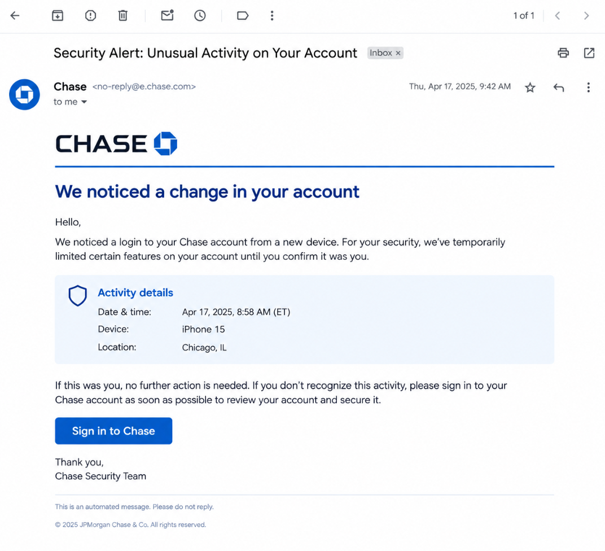
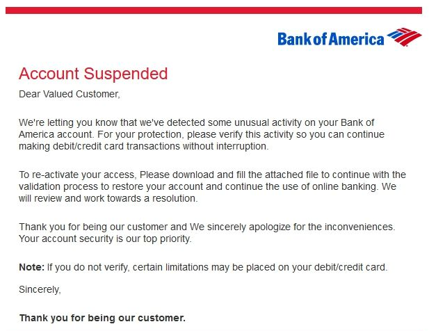

Legitimate Example

A real bank may notify you about suspicious transactions or account activity. You can independently verify the alert by opening your bank's official app or calling the number printed on your card.
Bank and financial impersonation scams occur when criminals pretend to represent banks, credit card companies, or other financial institutions to steal money or personal information.
Scammers may:
Knowing the warning signs can help you protect yourself.

A real bank may notify you about suspicious transactions or account activity. You can independently verify the alert by opening your bank's official app or calling the number printed on your card.

A scammer may send a text or call claiming your account is at risk and demand that you click a link, provide a verification code, or transfer money to a supposedly safe account. These tactics are designed to steal your funds or take control of your account.
Remember: a message that looks official is not necessarily genuine. Always verify financial alerts independently.
Scammers impersonate financial institutions to create fear and urgency. They use concerns about your money to convince you to reveal sensitive information or send funds.
You receive a call, text, or email claiming that a suspicious transaction occurred, your account is locked, or your bank needs to verify your identity.
The scammer asks you to click a link, share a password or verification code, provide card details, or transfer money to another account.
After obtaining your information or payment, the scammer may access your account, make unauthorized transactions, or steal your money.
Financial impersonation scams can appear in many places, including:
Anyone with a financial account can encounter an impersonation scam. Scammers may target people who:
However, it's important to know that anyone can fall victim.
If a financial alert seems suspicious, take these steps:
Being scammed can happen to anyone. Acting quickly may help limit the damage, and reporting the incident can help protect others.
Yes. Scammers can manipulate caller ID and imitate the names, logos, and language used by financial institutions. A familiar phone number or official-looking message does not prove the contact is genuine. Hang up and contact your bank using a verified number or its official app.
A request to transfer money to a supposedly safe account is a major scam warning sign. Do not move funds based on an unexpected call or message. Contact your bank independently using a trusted phone number to verify any security concerns.
Contact your bank immediately using its official app or a verified phone number. Explain what information you shared and ask how to secure your account, change compromised credentials, and address any unauthorized transactions. If you shared passwords used elsewhere, change those passwords too.